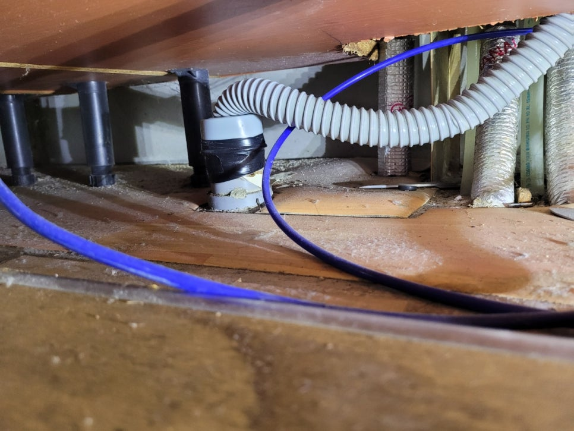
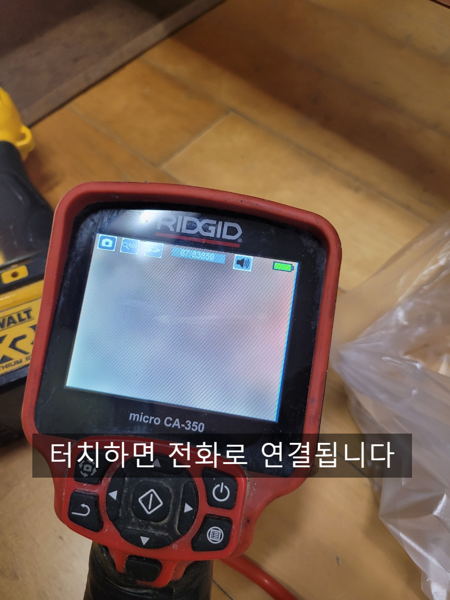
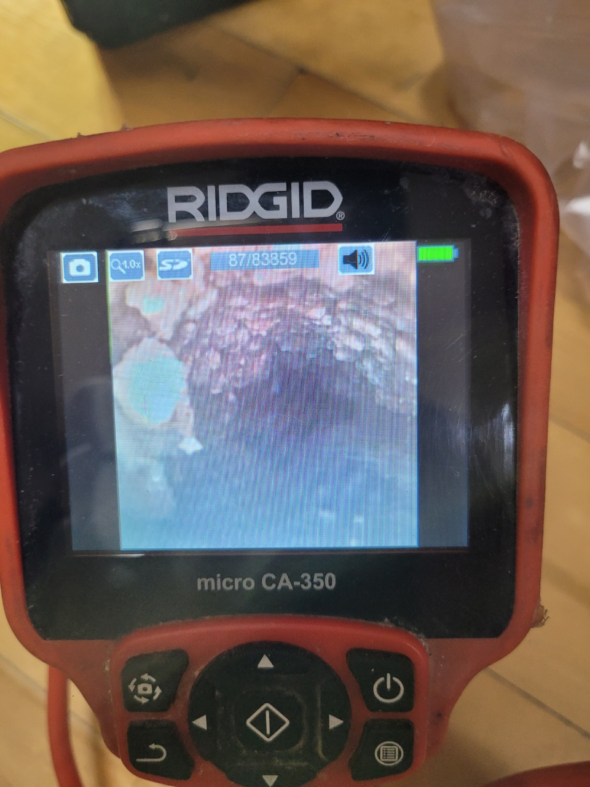
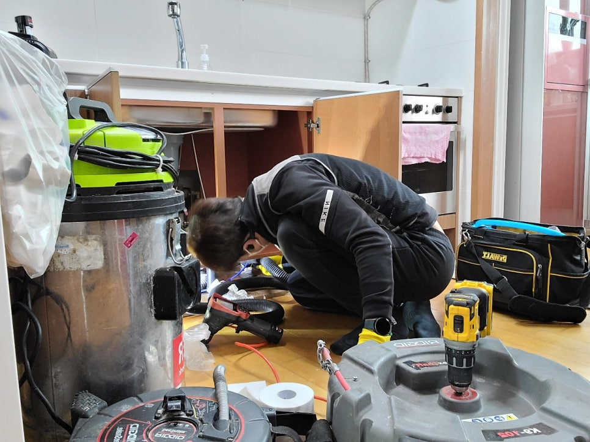
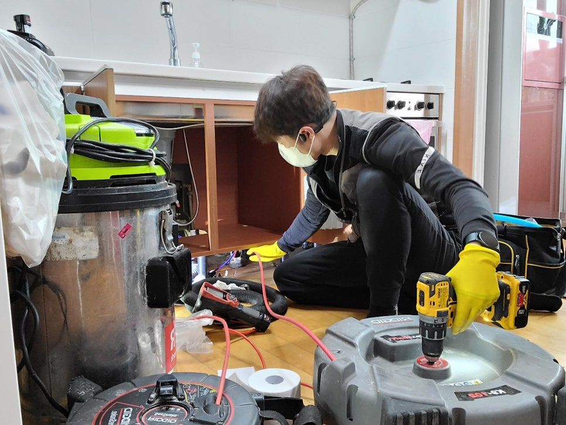
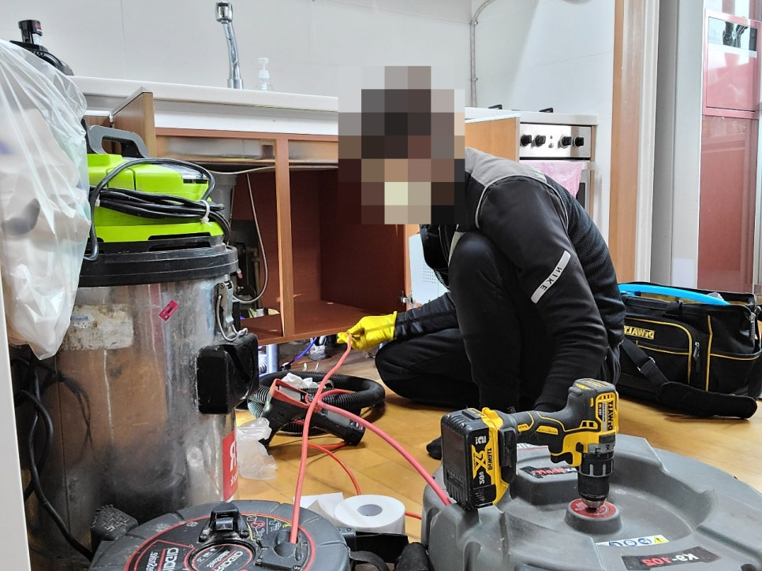
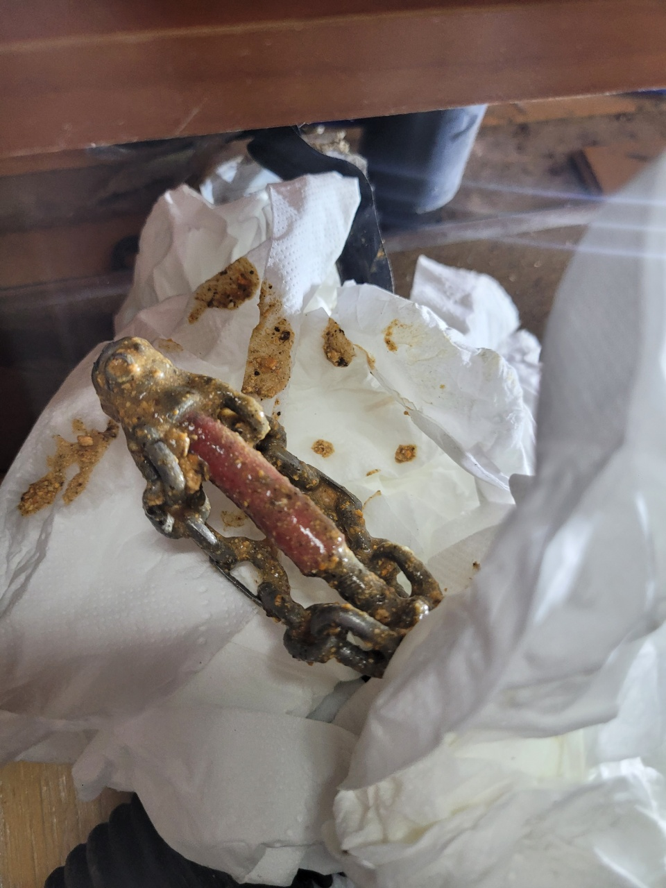
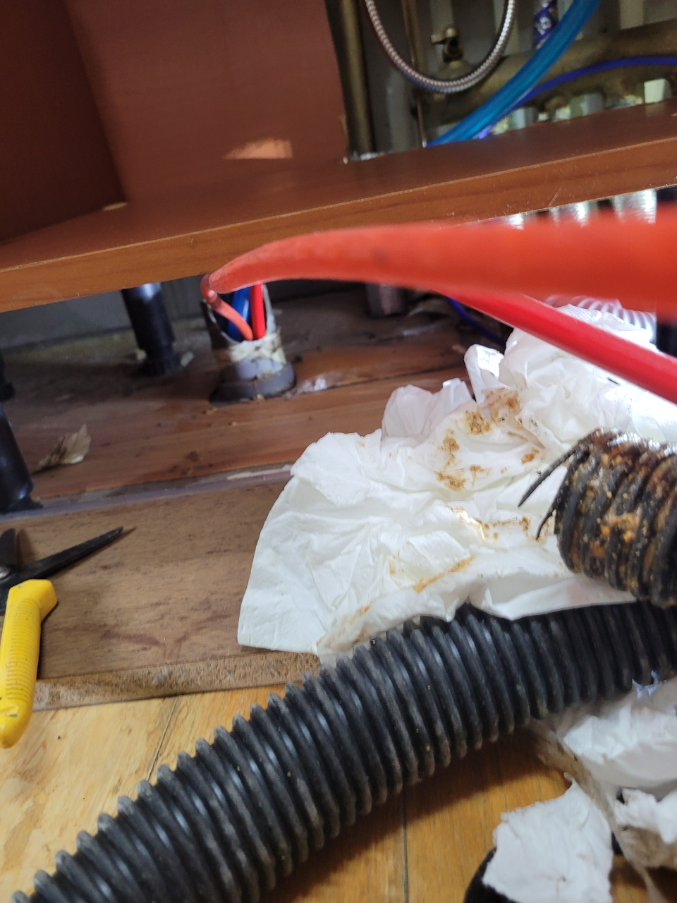

🏠 기흥구 싱크대 막힘 상하동 보라동 공세동 하수구 빠르게 해결해 드립니다
용인 기흥 싱크대막힘 전문 시공 후기

📋 작업 개요
- 위치: 용인 기흥, 기흥, 용인
- 서비스 유형: 싱크대막힘, 하수구막힘, 배관막힘, 역류해결, 뚫는업체, 배관청소, 고압세척
- 작업 일시: 2022. 4. 1. 23:09
- 업체명: 하수구수사대 (010-5615-2118)
🔍 문제 상황
기흥구 싱크대 막힘 상하동 보라동 공세동 하수구
산들산들 봄바람이 불어와
몸이 나른해지고
잠이 오니 커피가
절실히 생각나게 됩니다.
온도차가 심한 환절기인 만큼
감기 걸리지 않도록
조심하시고 코로나도
잘 이겨 내시길 바라봅니다.
오늘은 기흥구 싱크대 막힘
상하동 보라동 공세동 하수구 수리
다녀왔습니다.
아침식사 준비 중에
싱크대가 막혀 인터넷으로
업체를 알아보시다가
작업 사례를 보시고
연락 주셨습니다.
전문성하면
슬기로운 하수구 생활 아니겠습니까?
속이 뻥 뚫릴 정도로
시원하게 막힘 문제
해결해 드렸습니다.
기흥구 싱크대 막힘
상하동 보라동 공세동
하수구 해결을 위해
배관 내시경을 통해

🔎 원인 분석
💡 전문가 진단: 하수구수사대최신장비보유!1년as 보장!주말,공휴일도 ok!010-2340-2118
내부를 관찰해 보니 역시나
기름이 원인이었습니다.
배관이 언제 막혀도
이상하지 않을 정도로
기름 덩어리가 많이 붙어 있는데
이러한 경우 셀프로
해결하더라도 같은
상황이 반복되기 쉬우니
전문 업체에 문의하시는 것을
추천드립니다.
집에서 고기를 굽거나
튀김 요리를 하게 되면
기름을 하수구에
바로 버리시는 분들이 많은데
배관에 기름이 쌓이고
딱딱하게 굳고 점차 좁아지게 되면
하수구가 견디지 못하고
역류하게 됩니다.
이 정도는 괜찮겠지?
하고 버릴 때마다 적립처럼
차곡차곡 쌓여 다시 돌아오게 되니
나중을 생각하여 음식물 처리도
깔끔하게 해야겠죠.
사진에 보이는 빨간 선 끝에
배관 안을 확인할 수 있는
내시경이 달려 있어

🔧 작업 과정
내부를 볼 수 있습니다.
싱크대 하수구 청소를 위해
프렉스 샤프트 장비를 사용하였는데
이 장비는 선 앞에 체인이 달려있어
하수구 기름 제거에 탁월합니다.
프렉스 샤프트 장비에 전동 드릴을
연결한 후 체인이 달린 선을
하수구에 넣고 작동시키면
체인이 돌아가며
기름을 제거해 줍니다.
체인에 기름뿐만 아니라 찌꺼기들이
함께 들러붙어 나온 것이 보이네요.
하수구 안을 확인하며
작업 가능하니
더 깨끗하게 청소가 가능합니다.
여러 번 반복 작업하여 배관이
청소를 깨끗하게 마쳤습니다.
싱크대 하수구 외에
다용도실 배관도 말씀하셔서
함께 점검해 드렸는데
다행히 막히는 곳 없이 깔끔하네요.
작업 후 물을 틀어
잘 흘러가는지
막히는 부분은 없는지
꼼꼼하게 확인하고
고객님께 설명드렸습니다.
아침에 식사 준비하다
너무 당황했는데 잘 해결되어
다행이라며 좋아하시니
기분 좋게 작업을
마무리할 수 있었습니다.
하수구 작업을 깔끔하고
완벽하게 해결해 드렸습니다.
하수구가 막혔을 때
셀프로 가능한 경우도 있지만
배관 내부를 확실하게
청소하지 않으면 반복적으로
문제가 나타나게 되니
전문가의 도움을 받아 수리해 보세요.
전문 장비를 갖추고 있어
내시경 촬영, 고압세척이 가능하며


✅ 작업 완료
각종 배관 문제를 해결해
드리고 있습니다.
하수구 작업을 원하시는 곳이라면
빠르게 해결해 드리고 있으니
많은 문의 바랍니다.
하수구수사대
최신장비보유!
1년as 보장!
주말,공휴일도 ok!
010-2340-2118
경기도 용인시 수지구 풍덕천로129번길 9 5층 590호




⚠️ 주방 싱크대 배관 막힘 예방 수칙
- ✅ 기름기가 묻은 식기나 프라이팬은 설거지 전 키친타올로 반드시 기름때를 닦아내세요.
- ✅ 주기적으로 싱크대 개수대에 뜨거운 물을 가득 받아 한 번에 내려 배관 내부 기름을 씻어내세요.
- ✅ 배수구 거름망을 미세한 필터로 사용하시고 음식물 찌꺼기가 틈으로 새어 들지 않게 관리하세요.
- ✅ 베이킹소다와 식초를 뜨거운 물과 함께 일주일에 한 번씩 부어주면 배관 살균과 막힘 예방에 좋습니다.
💡 핵심 정리
- 확실한 장비 작업(내시경 점검 및 샤프트 스케일링)으로 원인을 뿌리 뽑습니다.
- 작업 후 1년 이내에 동일한 부위 재발 시 100% 무상 A/S 서비스를 보장합니다.
- 서울 · 경기 · 인천 전 지역에 24시간 언제든 긴급 출동할 수 있도록 항시 대기 중입니다.
❓ 자주 묻는 질문 (FAQ)
🚨 용인 기흥 싱크대막힘 문제로 고민이신가요?
정확한 원인 진단과 확실한 시공으로 재발 없는 해결을 약속드립니다.
24시간 긴급 출동 | 서울 · 경기 · 인천 전지역 | 1년 내 재발 시 무상 A/S